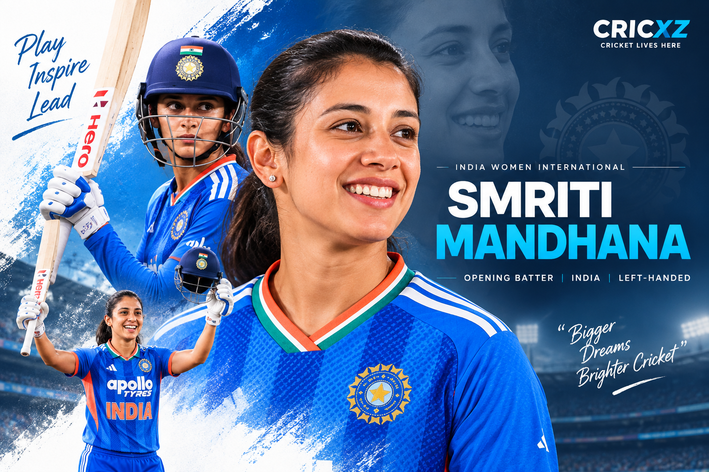

International Runs
- Total runs
- 10,880
- Status
- Women’s international record

Smriti Mandhana is an India international cricketer and left-handed top-order batter. She made her international debut in 2013 and is one of the leading batters in women’s international cricket.
Statistics as of: 3 September 2026
Primary record source: ICC
As of 3 September 2026, Smriti Mandhana has scored 10,880 runs in international cricket and holds the record for the most runs in women’s international cricket across formats.
Mandhana has also scored 18 international centuries, the most by a player in women’s international cricket. She moved past the previous international run record during India’s Women’s Asia Cup 2026 match against Hong Kong, China.
In that match, Mandhana scored 124 from 64 balls, registering the highest T20 international score of her career. The innings included 14 fours and seven sixes.
Her record combines long-term international performance with continued success as a top-order batter for India across formats.
2013
Mandhana made her India international debut in 2013 and has remained an active international cricketer through 2026.
Top-order opener
Mandhana is a left-handed batter who has primarily played at the top of India’s batting order.
Right-arm medium
Her primary role is batting, while her listed bowling style is right-arm medium.
Status as of 5 September 2026. Smriti Mandhana is an active India international and vice-captain of India’s squad for the Women’s Asia Cup 2026.
Mandhana remains a senior member of India’s batting group and continues to play as a top-order batter.
She was named vice-captain of India’s squad for the Women’s Asia Cup 2026.
Mandhana scored 124 from 64 balls against Hong Kong, China on 3 September 2026, setting multiple international records.
Became the leading run-scorer in women’s international cricket, reaching 10,880 runs across formats.
Reached 18 international centuries, the most in women’s international cricket.
Scored 124 from 64 balls against Hong Kong, China during the Women’s Asia Cup.
Scored her maiden T20 international century against England in Nottingham in June 2025.
Won the ICC Women’s ODI Cricketer of the Year award for 2024, the second time she received the honour.
Won the Rachael Heyhoe Flint Trophy as ICC Women’s Cricketer of the Year for 2021.
Won both the ICC Women’s Cricketer of the Year and ICC Women’s ODI Player of the Year awards for 2018.
Career-record figures updated through 3 September 2026. International run and century totals use the ICC record update following India’s Women’s Asia Cup match against Hong Kong, China.